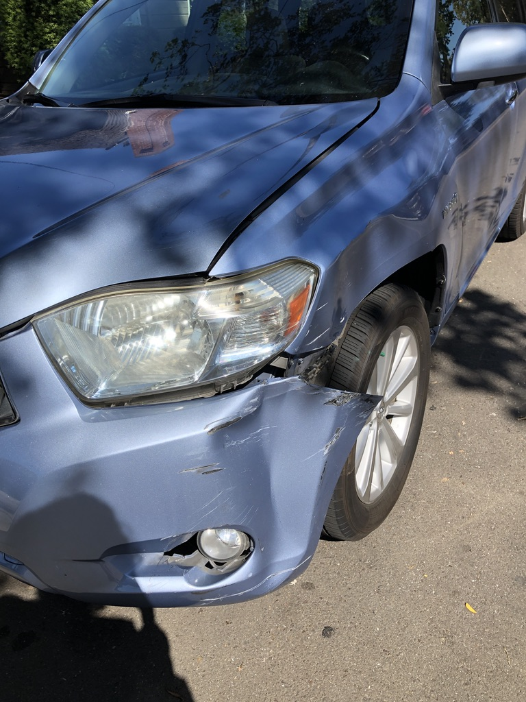

Lab 5 - Date Types and Variables
Challenge
The objective of this lab was to experiment with javascript, assigning variables and adjusting them to respond to our commands.
Problems
I had an issue where VSCode said that my javascript code was incorrect in the placement of a semicolon but I couldn't figure out why because it matched the example in the assignment instructions so I talked it through with my partner Autania and WesBot and eventually fixed it whcih also fixed the issue of getting the javascript file to link to my Lab 5 html.
Reflection
I think that this assignment is a good way for us to get more comfortable with javascript commands and I would say it was one of the less time consuming labs but it still had value in the end.
Results:
Script Output

My car in 2019 after my mom accidentally backed a uhaul into it.